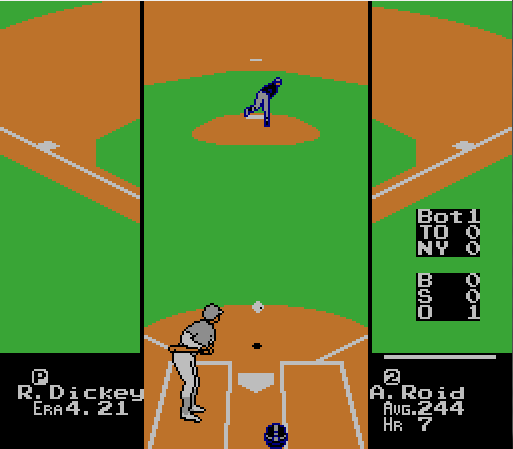
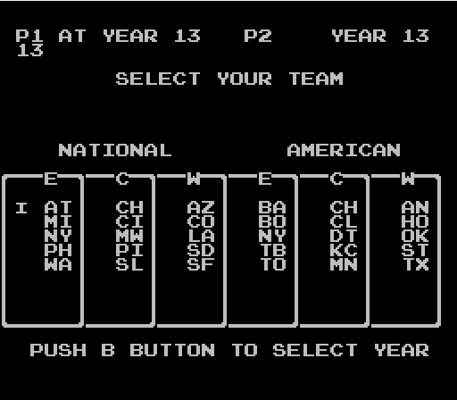
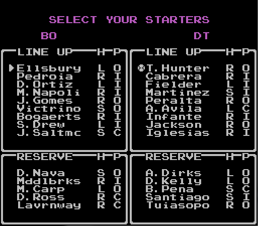
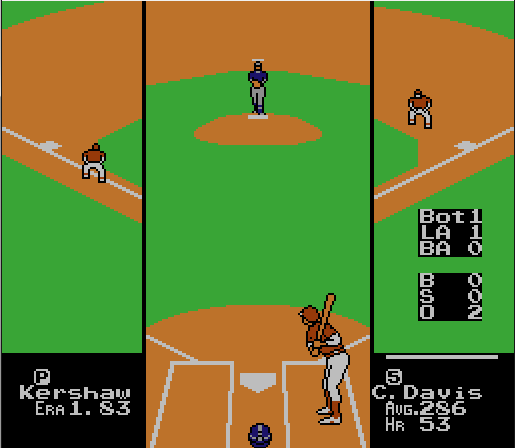

Welcome to the Ribeye3 Modifier project!
Do you love the game R.B.I. Baseball 3 for the Nintendo Entertainment System? Have you ever wished you could play that wonderful classic game with a new and improved lineup? Are you a fan of classic baseball games, but are bitter and jaded because your team didn't exist in 1990? Look no further.
 
The RibEye3 Modifier allows you to create your own modern-day classic baseball game. Upload a copy of the original ROM from 1990 (we don't host ROMs here) and a .csv file that declares all of your batters, pitchers, and statistics. The Python app picks apart the original ROM, patches it to a modern 30-team roster, adds in your changes from the .csv file, and serves you back a .nes file that should be playable in any standard NES emulator.
 